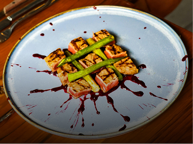
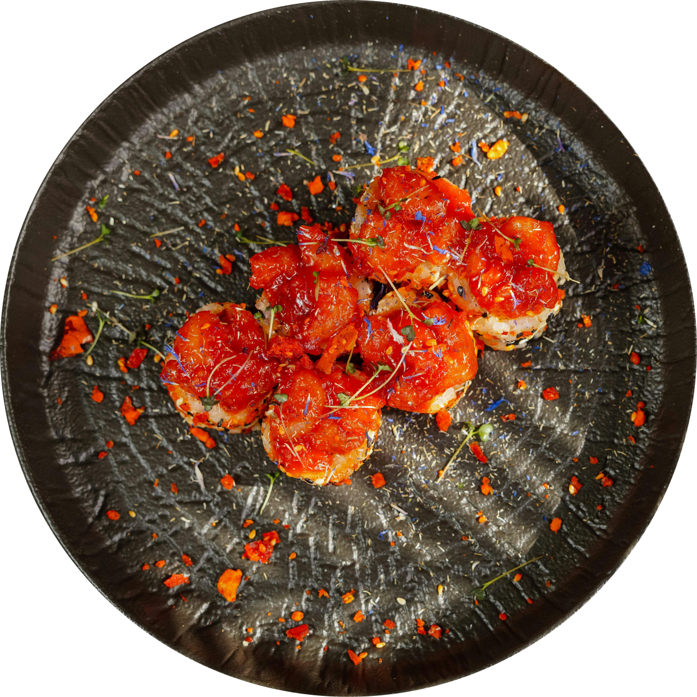
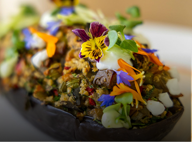
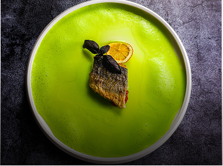
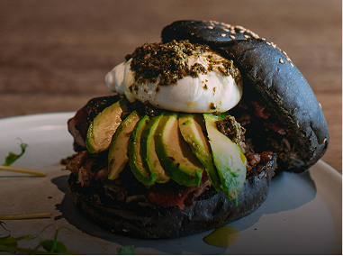

Crispy Plantain Mash With Garlic Tofu
Garlic, chili, and something that holds together.
Call it vegan if you want. We’ll just call it something.
It starts with what you already know. The kind of food that’s easy to recognize, a little nostalgic, maybe even a little overlooked.
From there, it gets rebuilt. Not to imitate it, and not to make a point out of it, but to see what happens when it’s approached differently. Plant-based, yes, but more importantly, intentional.
Some things stay close to what you expect. Others shift just enough to feel unfamiliar. That balance is the whole idea.


Garlic, chili, and something that holds together.

Slow, rich, and closer than expected.

Light, layered, and built to sit with you.

Stacked, messy, and intentionally delicious.
Dinner can be quick or take its time. The space is set up for both. Smaller tables, shared seating, and a few more private options depending on how you want to move through it.
Reservations are recommended, but not required. Walk-ins are welcome when space allows.
For groups or private dinners, the space can shift to accommodate something more planned. The experience stays the same, just a little more focused.
Reserve